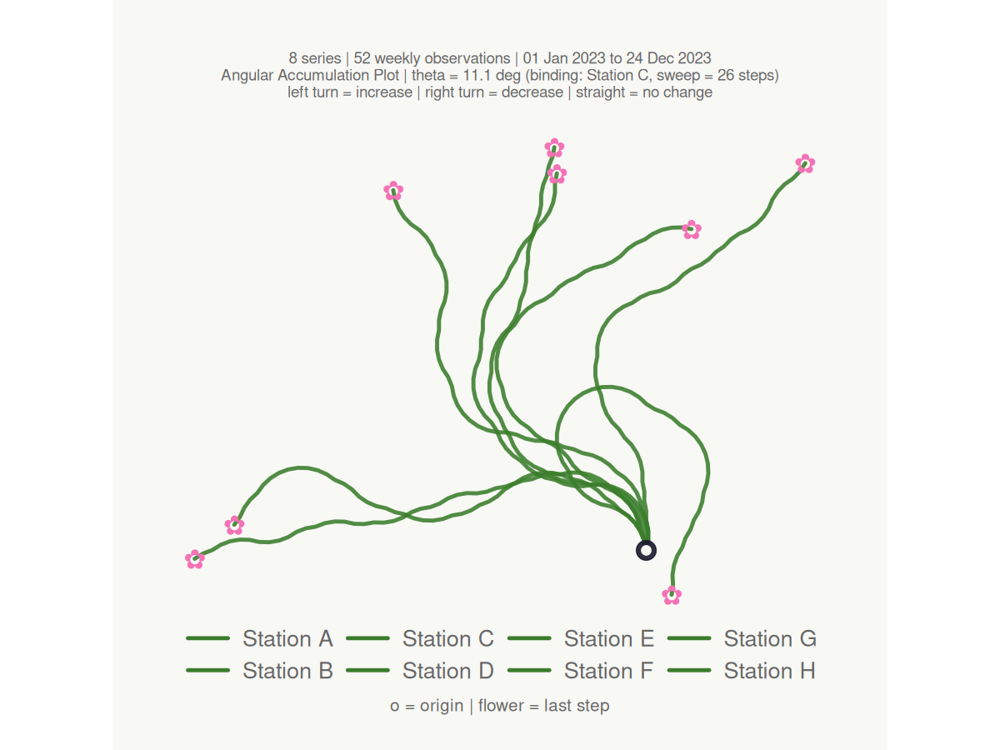
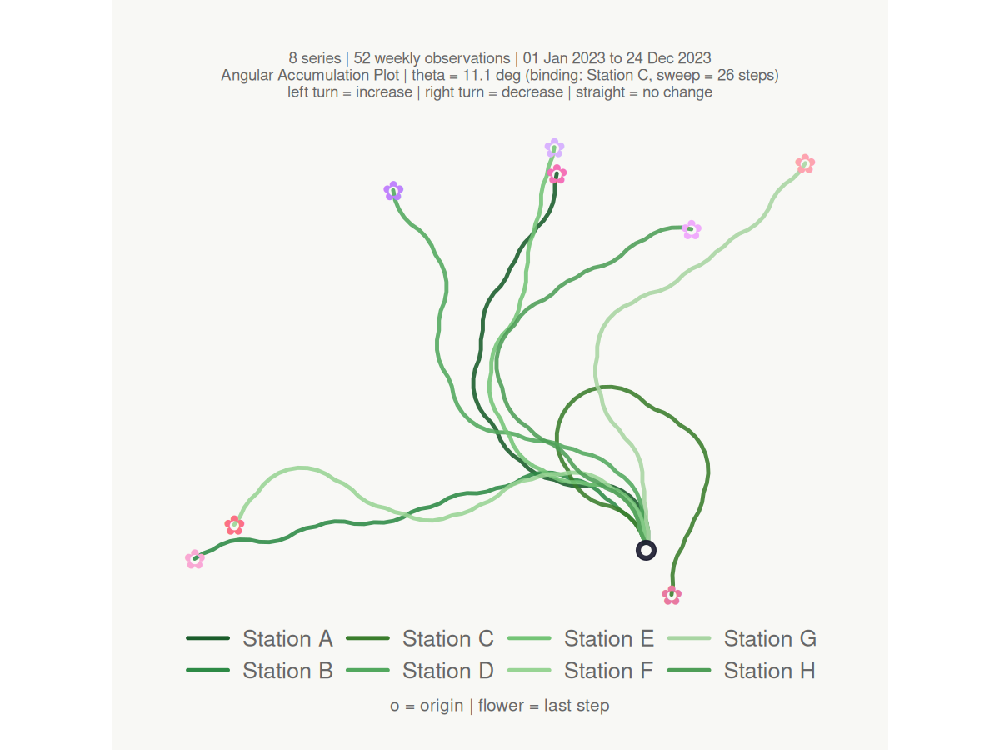
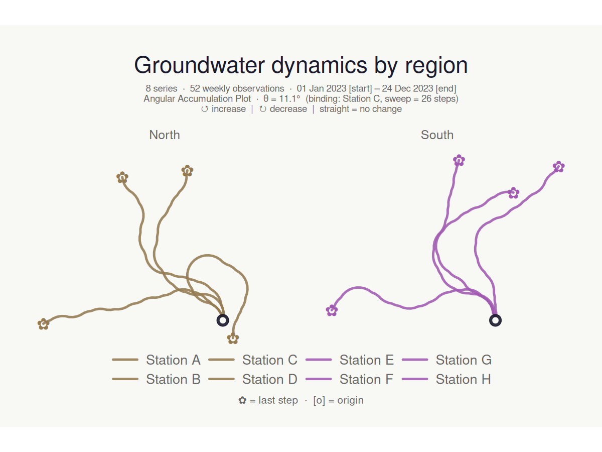
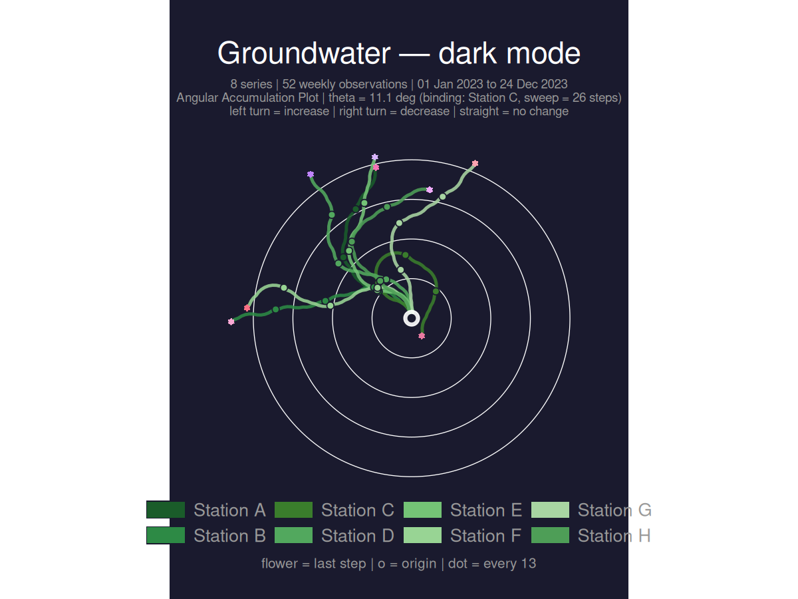
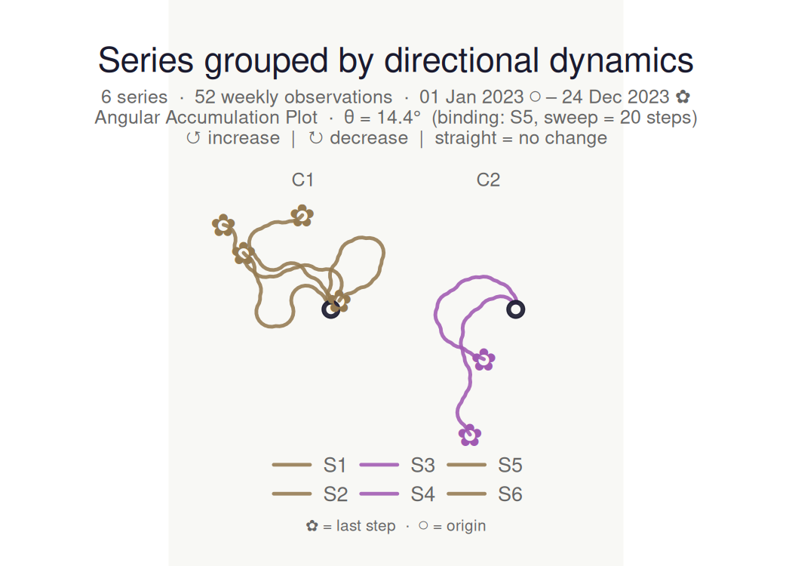
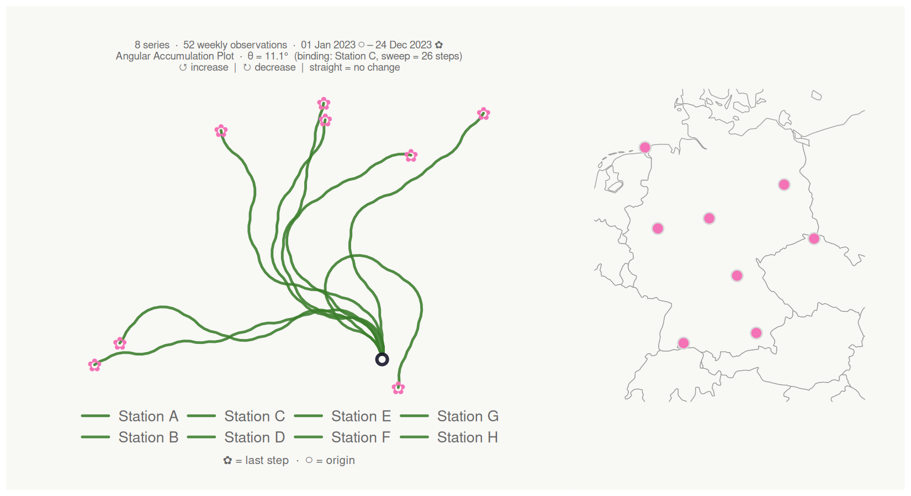
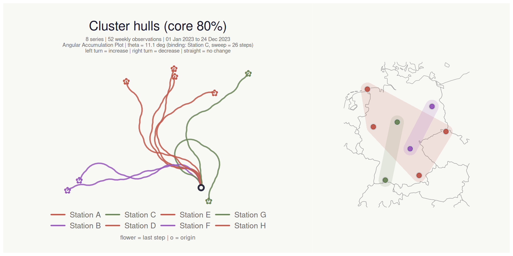

bouquets creates angular accumulation plots for collections of time series. Each series is encoded as a turtle-graphics path that turns left on increases and right on decreases — all series share the same origin and turning angle, so paths that look alike come from series with similar directional dynamics, regardless of their absolute values.
The technique is structurally related to DNA walk visualisations (Gates 1986; Yau et al. 2003).
Installation
# Development version from GitHub
# install.packages("remotes")
remotes::install_github("YOUR_GITHUB_USERNAME/bouquets")Optional dependencies that unlock extra features:
| Package | Feature |
|---|---|
patchwork |
Location map panel (lon_col + lat_col) |
maps |
Map background (required for map panel) |
mapdata |
Sub-national boundaries on the map |
sf |
Reprojection of non-WGS84 coordinates |
ggforce |
Cluster hull overlays on map (cluster_hull) |
ggblend |
Perceptual blending for hulls and points on map (blend = TRUE) |
plotly |
Interactive hover-tooltip version |
Basic usage
n <- 52L
weeks <- seq(as.Date("2023-01-01"), by = "week", length.out = n)
season <- sin(seq(0, 2 * pi, length.out = n))
gw_long <- tibble::tibble(
week = rep(weeks, 8L),
station = rep(paste0("Station ", LETTERS[1:8]), each = n),
region = rep(c("North", "North", "North", "North",
"South", "South", "South", "South"), each = n),
level_m = c(
8.5 + 0.8 * season + cumsum(rnorm(n, 0.00, 0.18)),
7.2 + 0.5 * season + cumsum(rnorm(n, 0.02, 0.22)),
9.1 + 1.1 * season + cumsum(rnorm(n, -0.01, 0.15)),
6.8 + 0.9 * season + cumsum(rnorm(n, 0.01, 0.20)),
5.4 + 1.2 * season + cumsum(rnorm(n, -0.02, 0.17)),
7.7 + 0.6 * season + cumsum(rnorm(n, 0.00, 0.21)),
8.9 + 0.7 * season + cumsum(rnorm(n, 0.01, 0.19)),
6.2 + 1.0 * season + cumsum(rnorm(n, -0.01, 0.16))
)
)
make_plot_bouquet(gw_long,
time_col = week,
series_col = station,
value_col = level_m,
verbose = FALSE
)
#> <bouquet_plot> 8 series | theta = 11.1 deg | binding: Station C
Key features
Keyword colour palettes
make_plot_bouquet(gw_long,
time_col = week,
series_col = station,
value_col = level_m,
stem_colors = "greens",
flower_colors = "blossom",
verbose = FALSE
)
#> <bouquet_plot> 8 series | theta = 11.1 deg | binding: Station C
Column-driven colours and faceting
Pass a bare column name to colour series by a grouping variable, and split into facets with facet_by:
make_plot_bouquet(gw_long,
time_col = week,
series_col = station,
value_col = level_m,
stem_colors = region,
flower_colors = region,
facet_by = region,
title = "Groundwater dynamics by region",
verbose = FALSE
)
#> <bouquet_plot> 8 series | theta = 11.1 deg | binding: Station C
Dark mode with rings and step markers
make_plot_bouquet(gw_long,
time_col = week,
series_col = station,
value_col = level_m,
stem_colors = "greens",
flower_colors = "blossom",
show_rings = TRUE,
marker_every = 13L,
dark_mode = TRUE,
title = "Groundwater — dark mode",
verbose = FALSE
)
#> <bouquet_plot> 8 series | theta = 11.1 deg | binding: Station C
Clustering
cluster_bouquet() builds the actual bouquet paths and groups series by path-geometry similarity. Three families of methods are available: "coords_*" (default — clusters on the (x, y) path coordinates, so paths that look alike in the plot cluster together), "heading_*" (cumulative heading sequence, rotation-invariant), and "area_*" (shoelace area between path pairs). The resulting cluster column plugs directly into make_plot_bouquet():
gw_long |>
cluster_bouquet(
time_col = week,
series_col = station,
value_col = level_m
) |>
make_plot_bouquet(
time_col = week,
series_col = station,
value_col = level_m,
stem_colors = cluster,
flower_colors = cluster,
facet_by = cluster,
title = "Series grouped by path-geometry similarity"
)
#> <bouquet_plot> 8 series | theta = 11.1 deg | binding: Station C
Location map panel
Supply coordinate columns to attach a location map alongside the bouquet. Any projected CRS is handled via coord_crs (e.g. coord_crs = 3035 for ETRS89-LAEA).
# Stations spread across Germany north to south, coast to border
gw_coords <- dplyr::mutate(gw_long,
lon = rep(c(6.9, 13.4, 9.9, 12.1, 7.5, 11.2, 8.7, 14.8), each = n),
lat = rep(c(53.6, 52.5, 51.5, 48.1, 51.2, 49.8, 47.8, 50.9), each = n)
)
make_plot_bouquet(gw_coords,
time_col = week,
series_col = station,
value_col = level_m,
lon_col = lon,
lat_col = lat,
map_width = 0.38,
verbose = FALSE
)
#> <bouquet_plot> 8 series | theta = 11.1 deg | binding: Station C + map
Cluster hulls on the map
Pass the cluster column to cluster_hull to draw colour-matched concave hulls around each cluster’s locations. Hull fill colour automatically matches the cluster’s flower_colors. Use hull_coverage (default 1) to focus the hull on the core of each cluster and reduce overlap when clusters are dense:
gw_coords <- dplyr::mutate(gw_long,
lon = rep(c(6.9, 13.4, 9.9, 12.1, 7.5, 11.2, 8.7, 14.8), each = n),
lat = rep(c(53.6, 52.5, 51.5, 48.1, 51.2, 49.8, 47.8, 50.9), each = n)
)
gw_coords |>
cluster_bouquet(
time_col = week,
series_col = station,
value_col = level_m
) |>
make_plot_bouquet(
time_col = week,
series_col = station,
value_col = level_m,
stem_colors = cluster,
flower_colors = cluster,
lon_col = lon,
lat_col = lat,
cluster_hull = cluster,
hull_coverage = 0.8,
map_width = 0.40,
title = "Cluster hulls (core 80%)"
)
#> <bouquet_plot> 8 series | theta = 11.1 deg | binding: Station C + map
How it works
For each series, the signed first difference is binarised to +1 (increase), -1 (decrease), or 0 (no change). The heading at step i accumulates as:
h_i = h_launch + sum(d_k x theta) for k = 2..i
The angle theta is derived so that even the most volatile series in the dataset never completes a full loop:
theta = 360 / max_over_series(max(C) - min(C)) x ceiling_pct
where C is the cumulative sum of signed steps for each series. All coordinates follow as a vectorised cumsum(cos(heading)) / cumsum(sin(heading)).